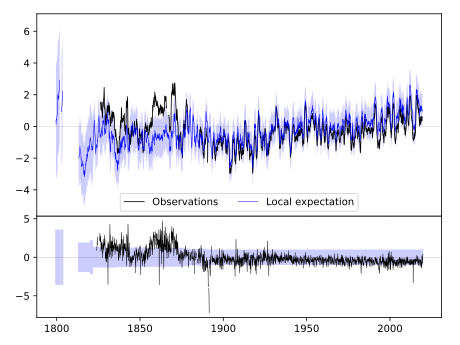
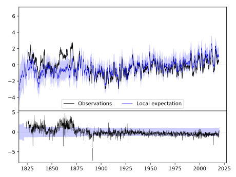
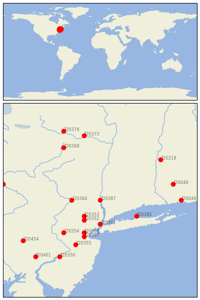

WEST POINT [USA]


| Neighbour | Name | Country | Distance | Lon/Lat | Years |
|---|
| 720387 | WEST POINT | USA | 0 | -74.0, 41.4 | 1824-2019 |
| 720353 | CHARLOTTEBURG RSVR | USA | 55 | -74.4, 41.0 | 1890-2019 |
| 720384 | PORT JERVIS | USA | 58 | -74.7, 41.4 | 1880-2019 |
| 720352 | BOONTON 1 SE | USA | 64 | -74.4, 40.9 | 1876-2019 |
| 720381 | NY CITY CNTRL PARK | USA | 66 | -74.0, 40.8 | 1821-2019 |
| 720385 | SETAUKET STRONG | USA | 87 | -73.1, 41.0 | 1876-2019 |
| 720358 | PLAINFIELD | USA | 95 | -74.4, 40.6 | 1876-2019 |
| 720357 | NEW BRUNSWICK 3 SE | USA | 105 | -74.4, 40.5 | 1863-2019 |
| 720354 | FLEMINGTON 5 NNW | USA | 116 | -74.9, 40.6 | 1887-2019 |
| 720355 | HIGHTSTOWN 2 W | USA | 132 | -74.6, 40.3 | 1876-2019 |
| 720048 | STORRS | USA | 156 | -72.2, 41.8 | 1884-2019 |
| 720368 | COOPERSTOWN | USA | 162 | -74.9, 42.7 | 1854-2019 |
| 720218 | AMHERST | USA | 166 | -72.5, 42.4 | 1836-2019 |
| 720046 | GROTON | USA | 166 | -72.0, 41.4 | 1884-2019 |
| 720356 | MOORESTOWN | USA | 177 | -75.0, 40.0 | 1863-2019 |
| 720373 | GLOVERSVILLE | USA | 180 | -74.4, 43.0 | 1892-2019 |
| 720454 | READING 4 NNW | USA | 194 | -75.9, 40.4 | 1888-2019 |
| 720378 | LITTLE FALLS CITY RS | USA | 203 | -74.9, 43.1 | 1892-2019 |
| 720456 | TOWANDA 1 S | USA | 204 | -76.4, 41.8 | 1893-2019 |
| 720461 | WEST CHESTER 2 NW | USA | 205 | -75.6, 40.0 | 1843-2019 |